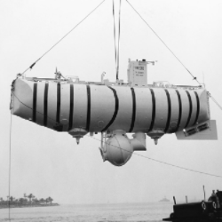

Батискаф
Батискаф — самоходный подводный аппарат для океанографических и других исследований на больших глубинах. В отличие от других глубоководных обитаемых аппаратов и «классических» подводных лодок, батискафы используют поплавок с бензином для создания положительной плавучести. Поплавок является лёгким корпусом аппарата, под ним закреплен сферический прочный корпус — гондола (аналог батисферы), в которой в условиях нормального атмосферного давления находятся аппаратура, пульты управления и экипаж. Движется батискаф с помощью гребных винтов, приводимых в движение электромоторами.
Подводные лодки, построенные по «классической» схеме, имеют ограниченную глубину погружения, обусловленную не только прочностью прочного корпуса (само существование батискафов, способных погружаться на многокилометровые глубины, свидетельствует о том, что создание прочного корпуса не является технической проблемой), а тем, что на подводных лодках вытеснение воды из балластных цистерн производится сжатым воздухом, хранящимся на борту подводной лодки в газовых баллонах высокого давления. Идея построить глубоководный аппарат, способный достичь предельных океанских глубин, пришла швейцарскому учёному Огюсту Пиккару в довоенные годы при работе над первым в мире стратостатом. Огюст Пиккар предложил построить судно, устроенное по принципу аэростата, стратостата или дирижабля. Вместо баллона, заполненного водородом или гелием, подводный аппарат должен иметь поплавок, заполненный каким-нибудь веществом с плотностью, меньшей, чем плотность воды. Вещество при большом давлении не должно изменять свои физические и химические свойства, поплавок должен нести груз и при этом поддерживать положительную плавучесть судна. Погружение аппарата, получившего название батискаф, происходит с помощью тяжёлого груза (балласта), для всплытия на поверхность балласт сбрасывается. Первый батискаф FNRS-2 был построен Огюстом Пиккаром в 1948 году.